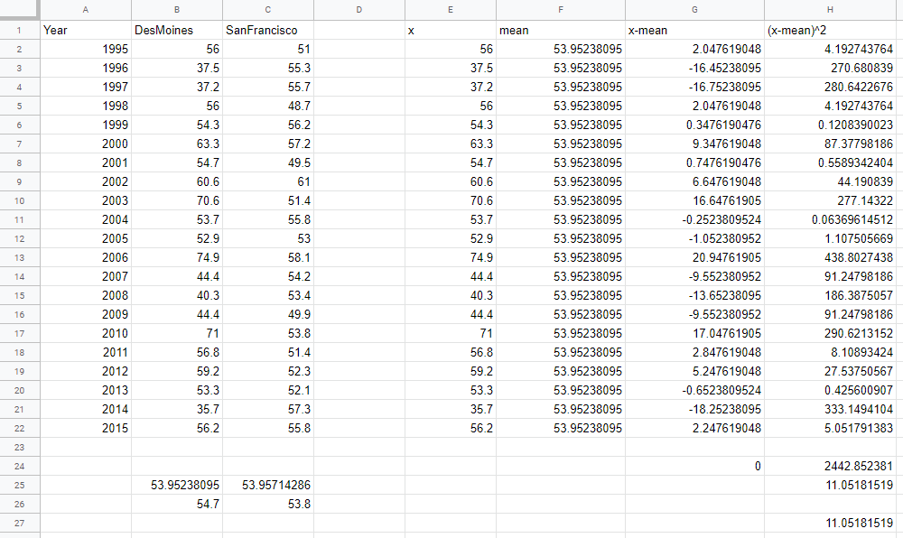
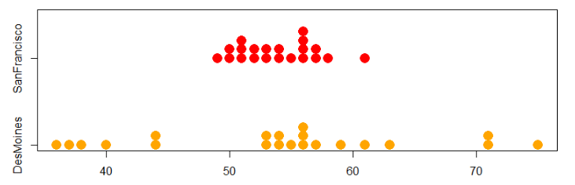
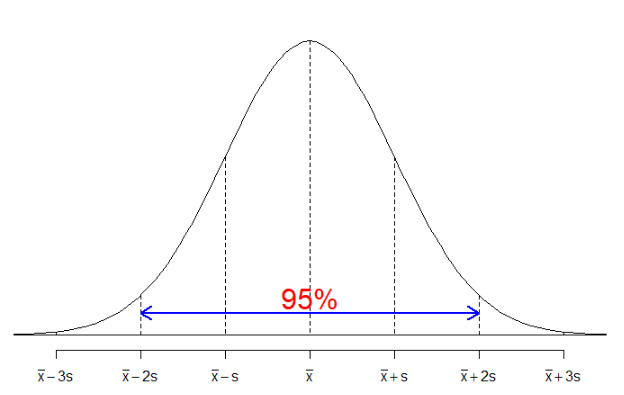
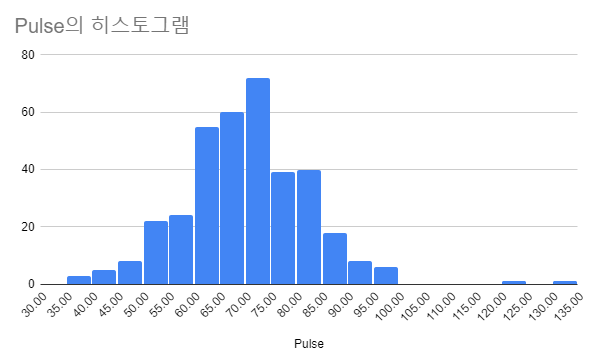
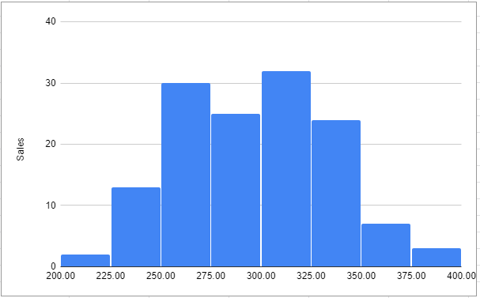
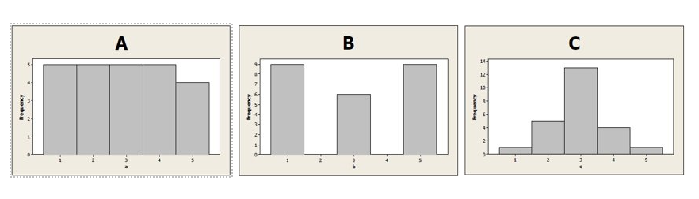
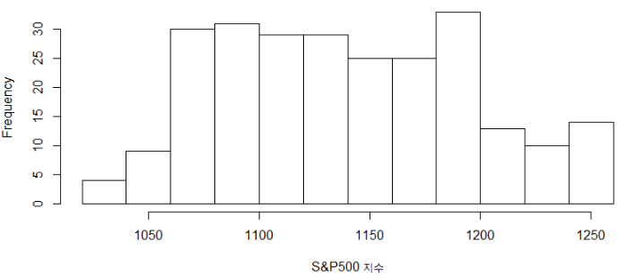
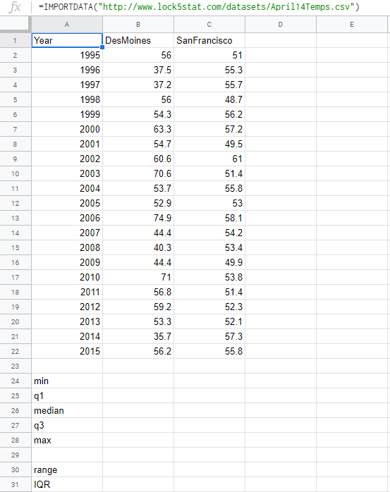
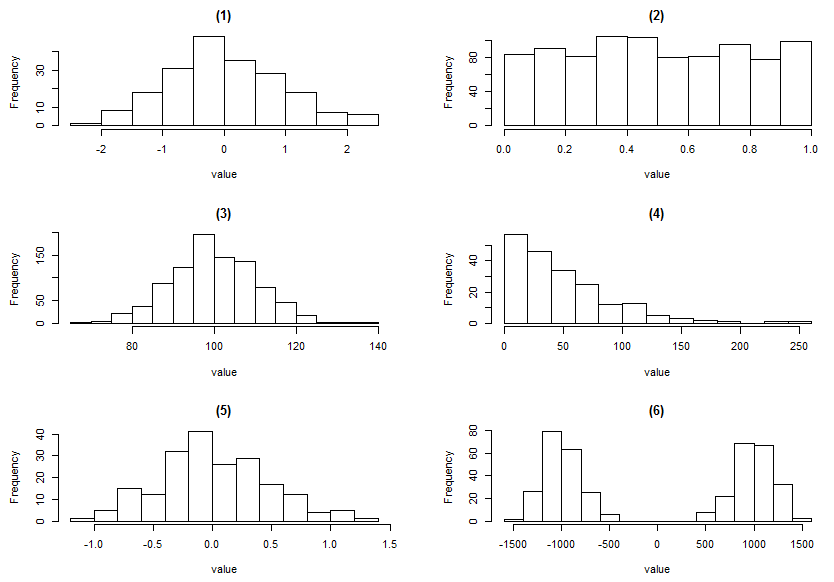

2.3 양적 변수 한 개: 변동
앞 절에서 양적 변수에 대한 두 개의 요약 통계량, 평균과 중앙값을 배웠다. 평균과 중앙값은 데이터의 중심이 어디에 있는지 알려준다. 데이터를 요약할 때 데이터의 중심도 중요하지만 데이터가 얼마나 퍼져 있는지도 그에 못지 않게 중요하다.
예제 2.15. \(1995\) 년부터 \(21\)년 동안 미국의 두 도시 디모인(Des Moines)과 샌프란시스코(San Francisco)의 \(4\)월 \(14\)일의 평균 기온 데이터가 위에 표로 주어져 있다. 구글의 스프레드시트를 이용하여 두 도시의 평균과 중앙값을 계산하라.
풀이 (클릭하면 풀이가 보입니다)
구글 스프레드시트의 첫 행과 첫 열이 만나는 셀에 다음 수식을 입력한다.
=IMPORTDATA("http://www.lock5stat.com/datasets2e/April14Temps.csv")
평균 계산은 셀 ‘B24’에 =average(B2:B22)을 입력하고 ’ENTER’ 키를 누른다. 중앙값 계산은 셀 ‘B25’에 =median(B2:B22)을 입력하고 ’ENTER’ 키를 누른다. 유사하게 다른 도시의 평균과 중앙값도 계산할 수 있다.
- 디모인: 평균 = \(53.952\), 중앙값 = \(54.7\)
- 샌프란시스코: 평균 = \(53.957\), 중앙값 = \(53.8\)

표준편차
예제 2.15에서 계산한 두 도시의 기온에 대한 평균은 거의 같다고 할 수 있다. 하지만 아래 점도표를 보면 분포는 매우 다르다! 샌프란시스코의 기온은 중심 부근에 가까이 있지만 디모인의 기온은 넓게 퍼져 있다. 디모인의 기온이 샌프란시스코보다 더 큰 변동(variability)을 가진다고 말한다. 데이터에서 변동을 측정하는 통계량이 표준편차(standard deviation)이다. 표준편차는 어떻게 계산할까?
편차(deviation)는 각 데이터 값 \(x\)에서 평균 \(\bar{x}\)를 뺀 값 \(x - \bar{x}\)이다. 어떤 값은 평균보다 크고 어떤 값은 평균보다 작으므로 편차는 음수 또는 양수이다. 하지만 편차를 모두 더하면 항상 \(0\)이 된다.
표준편차는 모든 편차를 제곱하여 합한 후에 \(n-1\)로 나누어 제곱근을 구한 값이다. 표준편차의 단위는 원 데이터의 단위와 같다.
\[\text{표준편차} = \sqrt{\frac{\sum (x - \bar{x})^2}{n-1}}\]
표준편차의 기호
- 표본에서 계산한 표준편차는 \(s\)로 표기한다.
- 모집단에서 계산한 표준편차는 \(\sigma\)(시그마)로 표기한다.
구글의 스프레드시트로 표준편차 계산
E열에 디모인 데이터를 복사한다.F2셀에 평균 입력하고 이 셀의 오른쪽 하단의 작은 사각형을 마우스로 잡아F22셀까지 끌어내린다.G열의G2셀에=E2-F2입력하고 이 셀의 오른쪽 하단의 작은 사각형을 마우스로G22셀까지 끌어내린다.H열의H2셀에=G2^2을 입력하고 오른쪽 하단의 작은 사각형을H22셀까지 끌어내린다.G24셀에=sum(G2:G22)입력G24셀의 오른쪽 하단의 작은 사각형을H24셀까지 마우스로 끌어 당긴다.H25셀에=sqrt(H24/20)입력H27셀에=stdev(E2:E22)입력
간단히 표준편차만 계산하려면 위 모든 과정을 생략하고 마지막 단계만 하면 된다.

확인문제 1. 다음 중 표준편차(standard deviation)에 대한 설명으로 가장 적절한 것은?
1 모든 데이터 값의 평균을 의미한다.
2 각 데이터 값과 평균의 차이를 절댓값으로 변환한 값이다.
3 각 데이터 값에서 평균을 뺀 값을 제곱하여 평균을 구한 후, 제곱근을 취한 값이다.
4 데이터 값 중에서 가장 큰 값과 가장 작은 값의 차이를 의미한다.
확인문제 2. 다음 중 표준편차가 작은 데이터의 특징으로 올바른 것은?
1 데이터 값들이 평균 주변에 밀집해 있다.
2 데이터 값들이 넓게 퍼져 있다.
3 데이터 값들의 변동이 크다.
4 이상점이 존재할 가능성이 높다.
확인문제 3. 표본에서 계산한 표준편차를 나타내는 기호는 무엇인가?
1 \(\sigma\) (시그마)
2 \(s\)
3 \(\mu\) (뮤)
4 \(\bar{x}\) (엑스바)

예제 2.16. 디모인과 샌프란시스코의 점도표가 위에 있다.
(1) 두 도시 중에 어느 도시의 표준편차가 더 클까? 왜 그렇게 생각하는가?
(2) 표준편차를 계산하라.
풀이 (클릭하면 풀이가 보입니다)
(1) 디모인의 데이터가 더 넓은 범위에 퍼져 있으므로 표준편차가 더 클 것이다.
(2) 구글 스프레트시트를 사용한다. 반올림하여 소수점 둘째 자리까지 계산하면 디모인의 표준편차 = \(11.05\), 샌프란시스코의 표준편차 = \(3.15\) 이다.
표준편차를 이용한 95% 법칙
데이터의 분포가 대략 대칭이고 종모양이면 데이터의 약 \(95\%\)는 평균에서 두 배의 표준편차 안에 있다. 대칭이고 종모양인 분포에서 뽑은 표본 중에서 약 \(95\%\) 데이터는 구간 (\(\bar{x} - 2s\), \(\bar{x} + 2s\)) 안에 있다. 아래 그림을 참조하라.

예제 2.17. 대학생 설문조사에서 \(1\)분당 맥박수의 히스토그램이 아래에 있다. 분포는 대략 좌우 대칭이고 종모양이다. 평균 \(\bar{x} = 69.6\)이고 표준편차 \(s = 12.2\)이다. 대략 \(95\%\) 맥박수 데이터를 포함하는 구간은 무엇인가?
풀이 (클릭하면 풀이가 보입니다)
분포가 대략 좌우 대칭이고 종모양이면 평균에서 두 배의 표준편차 안에 전체 데이터의 약 \(95\%\)를 포함한다.
\[\bar{x} \pm 2s\]
\[69.6 \pm 2(12.2)\]
\[69.6 \pm 24.4\]
\[69.6 - 24.4 = 45.2 \quad \text{and} \quad 69.6 + 24.4 = 94.0\]
약 \(95\%\) 맥박수는 구간 (\(45.2\), \(94.0\)) 안에 있다.

확인문제 1. 데이터의 분포를 요약하는 데 사용되는 두 가지 주요 통계량은 무엇인가?
1 평균과 표준편차
2 평균과 중앙값
3 중앙값과 최빈값
4 최빈값과 범위
확인문제 2. 다음 중 표준편차가 큰 데이터의 특징으로 올바른 것은?
1 데이터 값들이 평균 주변에 밀집해 있다.
2 데이터 값들이 넓은 범위에 걸쳐 퍼져 있다.
3 데이터 값들이 대부분 동일하다.
4 데이터 값들이 이상값 없이 정규분포를 따른다.
확인문제 3. 평균과 표준편차를 이용하여 \(95\%\) 법칙을 적용할 수 있는 데이터 분포의 조건으로 적절한 것은?
1 오른쪽으로 긴 꼬리를 가진 분포
2 왼쪽으로 긴 꼬리를 가진 분포
3 좌우 대칭이며 종모양인 분포
4 이상값이 많은 분포
데이터 2.4. 소매점 매출액
\(2000\)년 \(1\)월부터 \(2011\)년 \(4\)월까지 소매점 매출액 데이터를 웹주소 RetailSales에서 얻을 수 있다. 단위는 \(10\)억 달러이다
예제 2.18. 소매점 매출액 자료를 히스토그램으로 그린 것이 아래에 있다. 이 분포는 대략 대칭이고 종모양인가? 히스토그램을 이용하여 근사적인 평균과 표준편차를 계산하라.
풀이 (클릭하면 풀이가 보입니다)
이 히스토그램은 대략 좌우 대칭이고 종모양이라고 할 수 있다. 평균은 \(300\)으로 보인다. 표준편차를 추정하기 위하여 \(95\%\)의 데이터를 포함하는 중심이 평균인 구간은 (\(225\), \(375\)) 인것 같다. 구간의 양쪽 끝은 평균 \(300\)에서 \(75\) 단위만큼 떨어져 있다. \(95\%\) 법칙에서 표준편차의 두 배가 \(75\)이므로 표준편차는 대략 \(37.5\)이다. 모든 데이터를 사용하여 구글 스프레드시트로 계산하면 평균=\(296.4\), 표준편차=\(38.0\) 이다.

문제 2.1. 아래에 \(3\)개의 히스토그램이 있다. 표준편차가 가장 작은 히스토그램은?
1 A
2 B
3 C

문제 2.2. 당신의 데이터에 나머지보다 상당히 작은 값을 가진 데이터가 하나 있다. 이 값은 표준편차에 어떤 영향을 끼칠까?
1 표준편차를 크게 할 것이다.
2 표준편차를 작게 할 것이다.
3 표준편차는 거의 변하지 않을 것이다.
4 표준편차는 커질 수도 있고 작아질 수도 있다.
\(z\)-점수
의사는 수축기 혈압이 \(200\)인 환자를 보았다. 이 데이터는 얼마나 흔치 않은 값인가? 분포의 중심이나 변동을 모르면 데이터 하나의 값을 알아도 쓸모가 없는 경우가 있다. 데이터 하나의 값이 얼마나 흔치 않은 것인지를 결정할 때 자주 사용하는 방법은 평균으로부터 표준편차의 몇 배만큼 떨어져 있는가를 계산하는 것이다. 이 값을 \(z\)-점수라고 부른다.
표본에서 평균이 \(\bar{x}\), 표준편차가 \(s\)일 때 \(z\)-점수는 다음과 같이 계산한다.
\[z = \frac{x - \bar{x}}{s}\]
모집단인 경우에는 \(\bar{x}\) 대신에 \(\mu\), \(s\) 대신에 \(\sigma\)를 사용하여 \(z\)-점수를 계산한다. \(z\)-점수는 평균으로부터 표준편차 단위로 얼마나 떨어져 있는지 측정하므로 데이터의 원 단위와 무관하다.
데이터의 분포가 대칭이고 종모양이면 데이터의 약 \(95\%\)는 평균으로부터 두 배의 표준편차 범위 안에 있다고 앞에서 배웠다. 이것은 데이터의 약 \(5\%\)는 \(z\)-점수가 \(\pm 2\)를 벗어난다는 의미이다.
예제 2.19. 집중 치료실에 입원한 환자의 혈압은 \(204\)로 높고, 분당 맥박수는 \(52\)로 낮다. 이 값을 다른 환자와 비교할 때 얼마나 흔치 않은 값일까? 혈압의 요약 통계량은 평균이 \(132.2\), 표준편차는 \(32.95\)이다. 맥박수는 평균이 \(98.9\), 표준편차는 \(26.83\)이다.
풀이 (클릭하면 풀이가 보입니다)
혈압과 맥박수의 \(z\)-점수를 계산한다. 혈압의 \(z\)-점수는
\[z = \frac{x - \bar{x}}{s} = \frac{204 - 132.2}{32.95} = 2.18\]
이다. 혈압은 표본의 평균 혈압에서 \(2\)배의 표준편차보다 약간 높다.
맥박수의 \(z\)-점수는
\[z = \frac{x - \bar{x}}{s} = \frac{52 - 98.9}{26.83} = -1.75\]
이다.
맥박수는 표본의 평균 맥박수에서 \(2\)배의 표준편차보다 낮지 않다. 혈압 높은 것이 맥박수 낮은 것보다 더 흔치 않은 일이라고 말할 수 있다.
확인문제 1. \(z\)-점수의 의미를 가장 올바르게 설명한 것은?
1 특정 데이터 값이 평균과 얼마나 가까운지를 측정하는 값이다.
2 데이터 값이 평균에서 표준편차 단위로 얼마나 떨어져 있는지를 측정하는 값이다.
3 특정 데이터 값이 모집단 평균과 얼마나 차이가 나는지를 백분율로 나타낸 값이다.
4 특정 데이터 값이 표본 내에서 가장 빈번하게 나타나는지를 확인하는 값이다.
확인문제 2. 어떤 데이터 값의 \(z\)-점수가 -\(2.5\)라면 이 값이 의미하는 것은?
1 평균보다 \(2.5\)배 큰 값이다.
2 평균보다 \(2.5\)개의 표준편차만큼 작은 값이다.
3 평균과 동일한 값이다.
4 데이터 값이 모집단의 중앙값과 동일한 값을 가진다.
확인문제 3. 평균이 \(50\)이고 표준편차가 \(10\)인 데이터 집합에서 \(z\)-점수가 \(1.5\)인 데이터 값은 얼마인가?
1 \(35\)
2 \(50\)
3 \(65\)
4 \(75\)
백분위수
분포에 대한 정보를 다른 방식으로 만들어보자. 미국에서 SAT는 고등학교 학생이 몇 번이나 치를 수 있는 시험으로 대학 입학 결정에 사용되기도 한다. SAT 시험 영역은 읽기, 수학, 작문이다. 각 영역의 점수는 \(200\)~\(800\)이고 평균은 \(500\)점이 되도록 시험 문제를 출제한다. \(2010\)년에 졸업한 학생의 경우 읽기 평균은 \(501\)점, 수학 평균은 \(516\)점, 작문의 평균은 \(492\)점이었다.
시험을 치른 학생은 백분위수(percentile)가 기재된 성적표를 받는다. \(2010\)년의 경우 읽기 점수 \(620\)점은 \(84\) 백분위수이다. 이것은 \(2010\)년에 시험을 치른 \(84\%\) 학생의 읽기 점수는 \(620\)점과 같거나 작다는 뜻이다. 수학의 \(20\) 백분위수는 \(420\)점이다. \(20\%\)의 학생의 수학 점수는 \(420\)점과 같거나 작다는 의미이다.

예제 2.20. 미국에서 S&P500 지수는 \(500\)개 회사의 주식으로 만든 주가 지수이다. 위 그래프는 \(2010\)년 S&P500 지수를 히스토그램으로 그린 것이다. 이 그래프를 사용하여 대략적으로 \(25\) 백분위수와 \(90\) 백분위수를 추정하라.
풀이 (클릭하면 풀이가 보입니다)
\(25\) 백분위수와 같거나 작은 값이 전체의 \(1/4\)이어야 한다. 위 히스토그램에서 왼쪽의 면적이 전체의 \(1/4\)이 되는 값을 찾으면 약 \(1100\)이다. 정확한 값보다는 간단히 백분위수를 추정할 수 있는 능력이 중요하다. \(90\) 백분위수는 히스토그램의 오른쪽 면적이 \(10\%\) 되는 값이다. 이 값은 대략 \(1220\)이다.
확인문제 1. 백분위수(percentile)에 대한 설명으로 가장 적절한 것은?
1 백분위수는 평균과 중앙값을 더한 값의 절반을 의미한다.
2 특정 값이 데이터 집합 내에서 차지하는 상대적 위치를 나타내는 지표이다.
3 백분위수가 높을수록 반드시 평균보다 높은 값을 의미한다.
4 백분위수는 모든 데이터 값이 정규분포를 따를 때만 사용할 수 있다.
확인문제 2. SAT 시험에서 읽기 점수 \(700\)점이 \(95\) 백분위수라고 한다면, 이 값이 의미하는 것은?
1 시험을 본 학생 중 \(95\%\)가 \(700\)점보다 높은 점수를 받았다.
2 시험을 본 학생 중 \(95\%\)가 \(700\)점 이하의 점수를 받았다.
3 평균 점수가 \(700\)점임을 의미한다.
4 \(700\)점은 전체 데이터 중 중앙값과 같다.
확인문제 3. S&P500 지수 데이터에서 \(25\) 백분위수가 \(1100\)이고 \(90\) 백분위수가 \(1220\)이라면, 다음 중 올바른 해석은?
1 전체 데이터 중 \(25\%\)가 \(1100\) 이상이다.
2 \(90\%\)의 데이터 값이 \(1220\)보다 작거나 같다.
3 \(25\%\)의 데이터 값이 \(1100\)보다 크다.
4 \(1220\)은 중앙값을 의미한다.
다섯 숫자 요약
데이터 집합에서 최솟값(minimum)과 최댓값(maximum)은 분포의 양쪽 극단값이다. 중앙값은 \(50\) 백분위수인데 데이터를 \(2\)등분하는 값이다. \(2\)등분된 데이터를 다시 \(2\)등분하는 값을 각각 제1사분위수(\(Q_1\)), 제3사분위수(\(Q_3\))라고 말한다. 제1사분위수는 \(25\) 백분위수이고 제3사분위수는 \(75\) 백분위수이다. \(5\)개의 숫자(최솟값, 제1사분위수, 중앙값, 제3사분위수, 최댓값)는 분포의 중요한 특징을 요약한다.
예제 2.21. 학생 설문조사에서 \(1\)주일의 운동 시간에 대한 다섯 숫자 요약은 (\(0\), \(5\), \(8\), \(12\), \(40\)) 이다. 이것은 학생의 운동 시간 양에 대하여 무엇을 말하는지 설명하라.
풀이 (클릭하면 풀이가 보입니다)
모든 학생의 운동 시간은 \(0\)에서 \(40\) 사이이다. 가장 적게 운동하는 \(25\%\)의 학생은 \(1\)주일에 \(0\)에서 \(5\)시간 사이 운동한다. 그리고 가장 많이 운동하는 \(25\%\)의 학생은 \(1\)주일에 \(12\)시간에서 \(40\)시간 사이 운동한다. 가운데 \(50\%\) 학생은 \(5\)에서 \(12\)시간 사이 운동한다. 절반은 \(1\)주일에 \(8\)시간 이하 운동하고 나머지 절반은 \(8\)시간 이상 운동한다.
범위와 사분위수범위
다섯 숫자 요약은 데이터의 변동을 범위(range)와 사분위수범위(interquartile range, IQR)로 요약하게 해준다. 범위는 최댓값에서 최솟값을 뺀 값이다. 사분위수범위는 제3사분위수(\(Q_3\))에서 제1사분위수(\(Q_1\))를 뺀 값이다.
예제 2.22. 앞에서 소개한 포유동물의 수명 데이터의 다섯 숫자 요약은 (\(1\), \(8\), \(12\), \(16\), \(40\)) 이다. 범위와 사분위수범위는 무엇인가?
풀이 (클릭하면 풀이가 보입니다)
범위는 \(40 - 1 = 39\) 이다. 사분위수범위는 \(16 - 8 = 8\) 이다.
위에서 계산한 범위와 사분위수범위는 구간이 아니고 숫자 하나임에 주의하라. 또한 코끼리(수명 \(40\)년) 데이터를 제외하면 범위는 \(25 - 1 = 24\) 로 급격히 줄어든다. 하지만 사분위수범위는 \(15 - 8 = 7\) 이므로 \(1\)년 밖에 줄어들지 않는다. 범위보다는 사분위수범위가 이상점의 영향을 덜 받는다.
예제 2.23. 위 테이블은 예제 2.15에서 사용한 디모인 시와 샌프란시스코 시의 기온에 관한 데이터이다. 각 도시 기온의 범위와 사분위수범위를 계산하고 비교하라. 데이터 웹 주소는 April14Temps 이다.
풀이 (클릭하면 풀이가 보입니다)
구글의 스프레드시트 앱을 시작한다. A1 셀에 다음 수식을 입력한다.
=importdata("http://www.lock5stat.com/datasets2e/April14Temps.csv")
B24셀에=min(B2:B22)입력하여 최솟값 계산B25셀에=percentile(B2:B22, 0.25)입력하여 제1사분위수 계산B26셀에=median(B2:B22)또는=percentile(B2:B22, 0.5)입력하여 중앙값 계산B27셀에=percentile(B2:B22, 0.75)입력하여 제3사분위수 계산B28셀에=max(B2:B22)입력하여 최댓값 계산B30셀에=B28-B24입력하여 범위 계산B31셀에=B27-B25입력하여 사분위수범위 계산마우스로
B24셀부터B31셀까지 선택하여 오른쪽 하단 사각형을C31셀까지 끌어당겨 샌프란시스코의 통계량 값을 모두 계산한다.디모인 시의 범위: \(74.9 - 35.7 = 39.2\)
샌프란시스코의 범위: \(61 - 48.7 = 12.3\)
디모인 시의 \(IQR\): \(59.2 - 44.4 = 14.8\)
샌프란시스코의 \(IQR\): \(55.8 - 51.4 = 4.4\)
범위와 사분위수범위는 디모인이 샌프란시스코보다 훨씬 더 크다. 이는 디모인의 기온이 샌프란시스코보다 변동이 더 크다는 것을 의미한다.

확인문제 1. 다섯 숫자 요약(five-number summary)에 포함되지 않는 값은?
1 최솟값 (Minimum)
2 제1사분위수 (Q1)
3 평균 (Mean)
4 제3사분위수 (Q3)
확인문제 2. 다음 중 사분위수범위(IQR)를 올바르게 설명한 것은?
1 최댓값에서 최솟값을 뺀 값이다.
2 제3사분위수(Q3)에서 제1사분위수(Q1)를 뺀 값이다.
3 평균에서 중앙값을 뺀 값이다.
4 다섯 숫자 요약 값들의 평균을 의미한다.
확인문제 3. 범위(Range)와 사분위수범위(IQR)에 대한 설명으로 옳은 것은?
1 범위는 이상점(outlier)의 영향을 덜 받는다.
2 IQR은 데이터의 전체 변동성을 측정하는 가장 좋은 방법이다.
3 IQR은 이상점의 영향을 덜 받는 데이터 변동성 측도이다.
4 범위와 IQR은 항상 동일한 값을 가진다.
중심과 변동에 대한 측도 선택
표준편차는 데이터가 평균에서 얼마나 떨어져 있는가를 측정한다. 따라서 평균을 중심의 측도로 사용할 때는 표준편차를 변동의 측도로 사용하는 것이 타당하다. 평균과 표준편차는 모든 데이터를 사용한다는 장점이 있다. 하지만 이상점의 영향을 크게 받는다는 단점도 있다. 이에 비하면 중앙값과 사분위수범위는 이상점의 영향을 거의 받지 않는다.
데이타에 이상점들이 있거나 분포가 비대칭이 심하여 한쪽 꼬리가 길 때는 다섯 숫자 요약이 평균과 표준편차보다 더 많은 정보를 준다.
예제 2.24. 예제 2.13은 미국의 미식 축구 연봉 데이터를 다루었다. 몇 명의 스타 플레이어는 다른 선수들과 비교할 때 아주 많은 연봉을 받는다.
(1) 선수가 선호하는 중심의 측도는 이상점의 영향을 거의 받지 않는 중앙값(\(\$838,000\))이다. 선수가 선호하는 변동의 측도는 무엇인가?
(2) 팀 구단주가 선호하는 중심의 측도는 모든 선수의 연봉에 기초한 평균(\(\$1,870,000\))이다. 구단주가 선호하는 변동의 측도는 무엇인가?
풀이 (클릭하면 풀이가 보입니다)
(1) 변동의 측도로 사분위수범위를 사용해야 한다. 중앙값과 사분위수범위는 이상점의 영향을 거의 받지 않는다.
(2) 변동의 측도로 표준편차를 사용해야 한다. 평균과 표준편차는 모든 데이터를 사용하여 계산한다.
확인문제 1. 다음 중 평균과 표준편차를 중심과 변동의 측도로 사용하는 것이 적절한 경우는?
1 데이터에 이상점이 많고 한쪽 꼬리가 긴 분포일 때
2 데이터가 좌우 대칭이고 종모양 분포를 따를 때
3 데이터의 크기가 작고 변동이 거의 없을 때
4 데이터가 범주형 변수로 이루어져 있을 때
확인문제 2. 이상점의 영향을 적게 받는 중심과 변동의 측도 조합으로 적절한 것은?
1 평균과 표준편차
2 중앙값과 표준편차
3 중앙값과 사분위수범위(IQR)
4 최댓값과 최솟값
확인문제 3. 기업의 연봉 데이터를 분석할 때, 팀 구단주와 선수의 선호하는 통계량이 다른 이유는?
1 팀 구단주는 모든 선수의 연봉을 고려하므로 평균을 선호하고, 선수는 전체 분포에서 자신의 위치를 고려하므로 중앙값을 선호한다.
2 선수는 연봉이 많을수록 유리하기 때문에 항상 평균을 선호한다.
3 구단주는 변동이 작은 연봉을 원하기 때문에 표준편차보다 사분위수범위를 선호한다.
4 중앙값과 평균은 항상 같은 값이므로 선택의 차이가 없다.
학습 내용 정리
다음 사항을 이해하거나 해결하는 능력이 있어야 한다.
- 컴퓨터를 사용하여 양적 변수의 요약 통계량을 계산할 수 있다.
- 표준편차가 무엇인지 알고 있다.
- \(z\)-점수의 의미를 이해하고 계산할 수 있다.
- 다섯 숫자 요약과 백분위수를 이해한다.
- 변동의 측도로 사용하는 통계량은 범위, 사분위수범위, 표준편차 등이다.
- 중심과 변동의 측도로 사용되는 통계량의 장단점이 무엇인지 알고 있다.
표준편차(standard deviation)
표본에서 양적 변수의 변동을 측정하는 표준편차는 다음과 같이 계산한다.
\[\text{표준편차} = \sqrt{\frac{\sum (x - \bar{x})^2}{n-1}}\]
표준편차는 데이터와 평균과의 거리를 근사적으로 추정한 값이다. 표준편차가 클수록 데이터에는 더 많은 변동이 있고 데이터는 더 넓은 범위에 퍼져 있다는 것을 의미한다.
표본에서 표준편차의 기호는 \(s\)이고 데이터가 표본 평균 \(\bar{x}\)에서 얼마나 퍼져 있는지 측정한다.
모집단에서 표준편차의 기호는 \(\sigma\)(시그마)이다. 데이터가 모집단 평균 \(\mu\)에서 얼마나 퍼져 있는지 측정한다.
표준편차를 이용한 95% 법칙
데이터의 분포가 대략 좌우 대칭이고 종모양이면 약 \(95\%\)의 데이터는 평균에서 \(2\)배의 표준편차 범위 안에 있다. 종모양 분포에서 얻은 표본인 경우에 약 \(95\%\) 데이터는 구간 (\(\bar{x} - 2s\), \(\bar{x} + 2s\)) 안에 있다.
\(z\)-점수
표본에서 \(z\)-점수는 평균이 \(\bar{x}\), 표준편차가 \(s\)일 때
\[z = \frac{x - \bar{x}}{s}\]
이다.
모집단에서 \(z\)-점수는 평균이 \(\mu\), 표준편차가 \(\sigma\)일 때
\[z = \frac{x - \mu}{\sigma}\]
이다.
\(z\)-점수는 데이터가 평균에서 얼마나 떨어져 있는가를 표준편차 단위로 알려주며 데이터의 원 단위와는 관계가 없다.
다섯 숫자 요약
다섯 숫자 요약은 최솟값, 제1사분위수(\(25\) 백분위수), 중앙값, 제3사분위수(\(75\) 백분위수), 최댓값이다. 데이터를 크기 순으로 늘어 놓고 \(4\)등분한 \(5\)개의 숫자이다.
범위와 사분위수범위
범위는 최댓값에서 최솟값을 뺀 값이다. 사분위수범위는 제3사분위수(\(75\) 백분위수)에서 제1사분위수(\(25\) 백분위수)를 뺀 값이다.
확인문제 1. 다음 중 표준편차에 대한 설명으로 올바른 것은?
1 표준편차가 크면 데이터가 평균 근처에 집중되어 있다.
2 표준편차는 이상점의 영향을 거의 받지 않는다.
3 표준편차는 데이터가 평균에서 얼마나 떨어져 있는지를 측정하는 값이다.
4 표준편차가 \(0\)이면 데이터의 범위가 가장 크다.
확인문제 2. \(z\)-점수의 의미를 가장 적절하게 설명한 것은?
1 \(z\)-점수가 크면 데이터는 항상 평균보다 크다.
2 \(z\)-점수는 데이터가 평균에서 표준편차 단위로 얼마나 떨어져 있는지를 나타낸다.
3 \(z\)-점수는 원래 데이터의 단위를 유지하며 계산된다.
4 \(z\)-점수가 \(0\)이면 데이터 값은 최솟값을 의미한다.
확인문제 3. 다섯 숫자 요약(Five-number summary)에 포함되지 않는 값은?
1 최솟값
2 제1사분위수(Q1)
3 표준편차
4 중앙값
과제 2.8. 다음 각각의 표준편차와 적합한 히스토그램을 아래 그림(①~⑥)에서 고르시오.

(1) 표준편차 \(s = 0.5\)
1
2
3
4
5
6
(2) 표준편차 \(s = 10\)
1
2
3
4
5
6
(3) 표준편차 \(s = 50\)
1
2
3
4
5
6
(4) 표준편차 \(s = 1\)
1
2
3
4
5
6
(5) 표준편차 \(s = 1000\)
1
2
3
4
5
6
(6) 표준편차 \(s = 0.3\)
1
2
3
4
5
6
과제 2.9. 다음 각각의 다섯 숫자 요약에 알맞은 분포의 모양을 다음에서 고르시오.
(1) \((15, 25, 30, 35, 45)\)
1 왼쪽 꼬리가 긴 분포
2 오른쪽 꼬리가 긴 분포
3 대칭인 분포
(2) \((100, 110, 115, 160, 220)\)
1 왼쪽 꼬리가 긴 분포
2 오른쪽 꼬리가 긴 분포
3 대칭인 분포
(3) \((0, 15, 22, 24, 27)\)
1 왼쪽 꼬리가 긴 분포
2 오른쪽 꼬리가 긴 분포
3 대칭인 분포
(4) \((22.4, 30.1, 36.3, 42.5, 50.7)\)
1 왼쪽 꼬리가 긴 분포
2 오른쪽 꼬리가 긴 분포
3 대칭인 분포
과제 2.10. 하루에 얼마나 칼로리를 소비하는가에 대한 연구에 참가한 315명의 데이터는 웹주소 NutritionStudy에서 얻을 수 있다. 구글 스프레드시트 앱을 사용하여 Calories 변수에 대한 다음 질문에 답하라. 모든 계산은 소수점 이하를 버리고 정수로 답하시오.
중심·퍼짐 측도
(1)-a 평균
정답: 1796
(1)-b 표준편차
정답: 680
위치 측도
(2)-a 중앙값
정답: 1666
(2)-b 제1사분위수
정답: 1338
(2)-c 제3사분위수
정답: 2100
변동 측도
(3)-a 범위
정답: 6217
(3)-b 사분위수범위
정답: 762